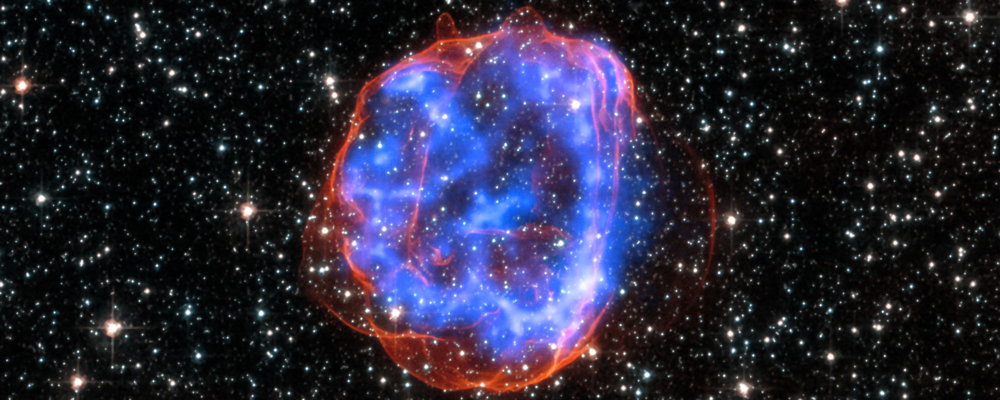

The picture might have been a bit misleading. There aren't any massive lighthouses in space helping aliens zip around the galaxy. I mean… at least we haven't found any. The real beacons are pulsars! To understand what pulsars really are, we first need to understand what happens to stars after they die.
For a red supergiant (one of the biggest objects in the universe) to die, the star must run out of fuel. Once it does, the star collapses in on itself, since it has run out of atoms (fuel) to merge in its core. That merging process is what keeps stars alive, as their own weight wants to collapse them inward; however, fusion creates the internal pressure that holds stars together. Once the fuel runs out and that force ceases, gravity is allowed to crumble all the matter in the star. Because this happens suddenly, when all the matter in the star collapses, it rebounds and creates one of the largest explosions in the entire cosmos: a supernova. The star’s material is flung out into space, creating a beautiful nebula.
Not all the material is lost, though. Enter the neutron star. Much of the matter of the original star is still preserved, but is now compressed into roughly the size of a city. Why is this significant? Well, originally, the red supergiant was rotating on its axis with some angular velocity, but due to the conservation of angular momentum, the new neutron star now spins at ridiculous speeds, ranging from 1 rotation per second to over 700 rotations per second. This is because much of the red supergiant’s mass is now crammed into an object hundreds to over a thousand times smaller in diameter. Think about a figure skater. When they spin with their arms out, they have a certain angular speed, but once they pull their arms in, they begin to spin much faster. Now scale that up about a trillion times.
Neutron stars have some of the strongest electromagnetic fields of any objects in the universe. If you pair these fields with their nonsensical rotation speeds, they emit strong beams of electromagnetic radiation—including visible light, X-rays, and gamma rays—from their magnetic poles.

As neutron stars spin, these beams sweep across the sky like a lighthouse. When a neutron star is aligned so that its beams pass over our view here on Earth, we observe it as a star flickering on and off in the sky. When we observe a neutron star like this, it is classified as a pulsar. It’s important to note that not all neutron stars are pulsars, since only the ones whose beams pass over our point of view here on Earth are classified as such. All neutron stars emit beams of electromagnetic radiation from their poles, but not all of them are oriented in a way that lets us see that flicker. They will just appear like a normal star.